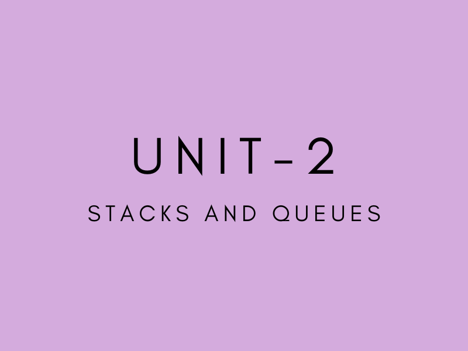

DATA STRUCTURES
SYLLABUS
UNIT-1 ARRAYS AND LINKED LIST
The Abstract Data Type(ADT)
Dynamic allocation of arrays
Representation of multidimensional arrays
Single Linked List
Polynomials
Polynomial representation -Adding Polynomials-Circular list representation of Polynomials
Sparse Matrices
Sparse Matrix Representation
Doubly linked list
UNIT-2 STACKS AND QUEUES
The Stack,Stack using Dynamic Array
Recursion
Linked Stacks
The Queue
Linked Queues
Circular Queue using Dynamic Arrays
De-queue
Application of Stacks and Queues
Evaluation of Expressions
Expression-Postfix Notation-Infix to postfix
Towers Of Hanoi Problem
UNIT-3 SEARCHING AND SORTING
Linear Search
Binary Search
Bubble Sort
Selection Sort
Insertion Sort
Quick Sort
Merge Sort
UNIT-4 TREES
Introduction
Terminology
Representation of Trees
Binary Trees
The Abstract Data Type
Properties Of Binary Trees
Binary Tree Representation
Binary Tree Traversal
Binary Search Trees
Searching a Binary Search Tree
Insertion in to a Binary Search Tree
Deletion from a Binary Search Tree
UNIT-5 GRAPHS
The Graph Abstract Data Type
Introduction
Definition
Graph representation
Depth First Search
Breadth FIrst Search
Connected Components
Spanning Trees
Bi-connected Components
Minimum Cost Spanning Trees-
Krushkal's Algorithm
Prim's Algorithm
Shortest Paths and Transitive Closure
Single Source/All Destination
All-Pairs Shortest Path
